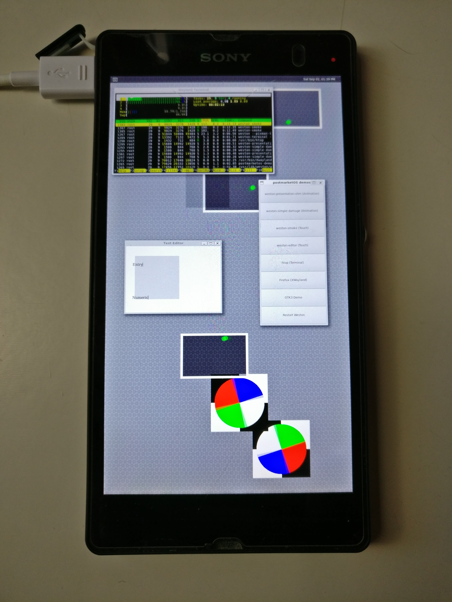

Weston
|  | |
| Name | Weston |
|---|---|
| In postmarketOS | |
| Package | postmarketos-ui-weston |
| Status | Available |
{kind=link}
Weston is the reference implementation of a Wayland compositor.
Installation
-
pmbootstrap init -
User interface: weston
This will package weston libraries as well as demos for your device, see
weston*
commands.
Weston will be launched automatically on boot by TinyDM.
RDP (Remote Desktop Protocol)
Prerequisite:
-
apk add weston-backend-rdp -
apk add openssl
Create a Self-Signed SSL Certificate:
-
sudo openssl req -x509 -nodes -days 365 -newkey rsa:2048 -keyout mypublic.key -out mycrt.crt
Start weston with RDP backend:
-
weston --backend=rdp-backend.so --rdp-tls-cert=/path/to/mycrt.crt --rdp-tls-key=/path/to/mypublic.key --socket=wayland-1 --width=540 --height=600
On host:
-
xfreerdp /v:172.16.42.1 /sec:tls
Guide
Follow the Display guide to change and fix display related issues.
Troubleshooting
Weston is very commonly used for testing new ports and as a demo ( Category:Interface ). Unfortunately, upstream changes can make maintenance difficult. The common backend fbdev has been deprecated and disabled by default in weston 10.0.0 .
Choosing weston as the interface (
pmbootstrap init
) on an unmaintained or irregularly maintained device that uses the fbdev backend will likely result in blank screen after the "pmbootstrap loading" splash screen. Log in via ssh and check the file
/etc/xdg/weston/weston.ini
for an entry such as
backend=fbdev-backend.so
. Compare this to the value in
weston.ini.default
, likely
backend=drm-backend.so
.
The tinydm.log in case of fbdev may have entries such as:
Session: /usr/share/wayland-sessions/weston.desktop
Desktop: weston
Exec: dbus-run-session start_weston.sh
...
failed to connect to Wayland display: No such file or directory
failed to create display: No such file or directory
The
logread
command may show entries such as:
Using config file '/etc/xdg/weston/weston.ini'
...
Loading module '/usr/lib/libweston-10/fbdev-backend.so'
Failed to load module: Error loading shared library /usr/lib/libweston-10/fbdev-backend.so: No such file or directory
fatal: failed to create compositor backend